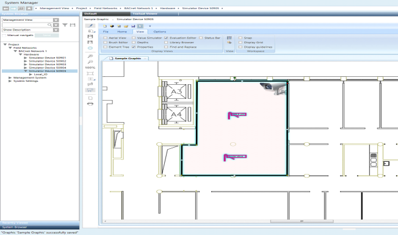

Coverage Area
Management station graphics can contain cameras or monitoring devices to which objects, such as fire sensors, ceiling sprinklers, temperature sensors, etc. are associated. In Runtime mode or in the Graphics Viewer, you can opt to view the coverage area of the cameras or monitoring devices on your graphic, and thereby identify the view associated with the objects.
A coverage area symbol is created and associated with a device, allowing you to drag a device associated with a coverage area symbol on to a graphic, and then add objects to the coverage area shape with the result of creating a link between them. The coverage area shape is associated with the device object from System Browser by setting the Coverage Area property in the Advanced section of the Properties view.
When a graphic containing a coverage area is displayed in the Graphics Viewer, the coverage area of the devices is not visible by default. You must click Coverage Area to view the coverage area of any monitoring device on the graphic.

About Configuring Coverage Area Library Symbols
Typically, a project librarian takes an existing device symbol and draws a coverage area shape for the device image and then associates the coverage area with an object reference. In order for the coverage area to be modifiable in the future, the project librarian must assign a unique ID to the coverage area.
For example, you have an existing video camera symbol and you want to create a coverage area to graphically represent the area and objects it monitors and is linked to. Creating a coverage area involves drawing a coverage area shape on the symbol with one of the following elements: Path, ellipsis, polygon, or rectangle. If you do not have an existing video camera symbol, create a new symbol for your camera or monitoring device, and after importing your device image, draw the coverage area for the device. Once the coverage area shape is drawn, it is then associated with the object model definition.
When you create a coverage area symbol, you must make sure to give each coverage area shape a unique ID within the symbol. Giving the coverage area shape an ID, allows the user, who is eventually creating a graphic with the symbol, to modify the coverage area shape within the symbol instance.
It is also recommended that prior to working with coverage area you have a good understanding of symbol substitutions and property evaluations.
Using Coverage Area Symbols in Project Graphics
If you are a system engineer or tasked with the job of creating graphics in a project, you will not need to create the coverage area shapes or symbols. Your monitoring device should already be associated to a coverage area in a device symbol in one of your libraries.
To use coverage area in a graphic, drag a monitoring device that is associated with a coverage area from System Browser and drop it on the Graphics Editor canvas. You can adjust the shape of the coverage area for this particular instance of the coverage area symbol. However, this requires the ID property of the coverage area in the symbol to be set. You construct your coverage area by adding objects from System Browser that are in the monitoring range of your device.
It is also recommended that prior to working with coverage area you have a good understanding of symbol substitutions and property evaluations.
Related Topics
For symbol background information, see Symbol Basics and Evaluation Expressions and Properties.
For workspace overview, see Graphics Editor Toolbar.
For related procedures, see the following:
- For configuring coverage area shapes for device symbols, see Draw a Coverage Area Symbol.
- For associating symbols with object models or functions, see Associate a Symbol with an Object Model.
For a related workflows, see Associating Video Cameras with Objects from Graphics.